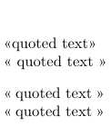
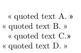
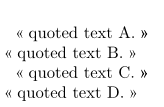

Contents
Summary
The command \setcharacterspacing takes care about the space before/after quotation marks when you use manual quotes in a document.
Settings
Description
It doesn't matter whether you use or don't use space between the
quotations marks and the quoted text.
Examples
Example 1
-
\framed[frame=off,align=normal]{% \startlines «quoted text» « quoted text » \stoplines \setcharacterspacing[frenchpunctuation] \startlines «quoted text» « quoted text » \stoplines }
- 
Example 2
When you use the quotation command or environment ConTeXt adds a space between the quotation marks and the quoted text by itself but in the quotation-environment the space before the closing mark disappears when you add \setcharacterspacing.
-
\language[fr] \framed[frame=off,align=normal]{% \startquotation quoted text A. \stopquotation \quotation{quoted text B.} \setcharacterspacing[frenchpunctuation] \startquotation quoted text C. \stopquotation \quotation{quoted text D.} }
- 
A temporary fix for the problem with the quotation environment is based on \setupquotation and \resetcharacterspacing by disabling the characterspacing mechanism when ConTeXt places the quotation marks.
-
\language[fr] \framed[frame=off,align=normal]{% \startquotation quoted text A. \stopquotation \quotation{quoted text B.} \setcharacterspacing[frenchpunctuation] \setupquotation[symstyle=\resetcharacterspacing] \startquotation quoted text C. \stopquotation \quotation{quoted text D.} }
- 